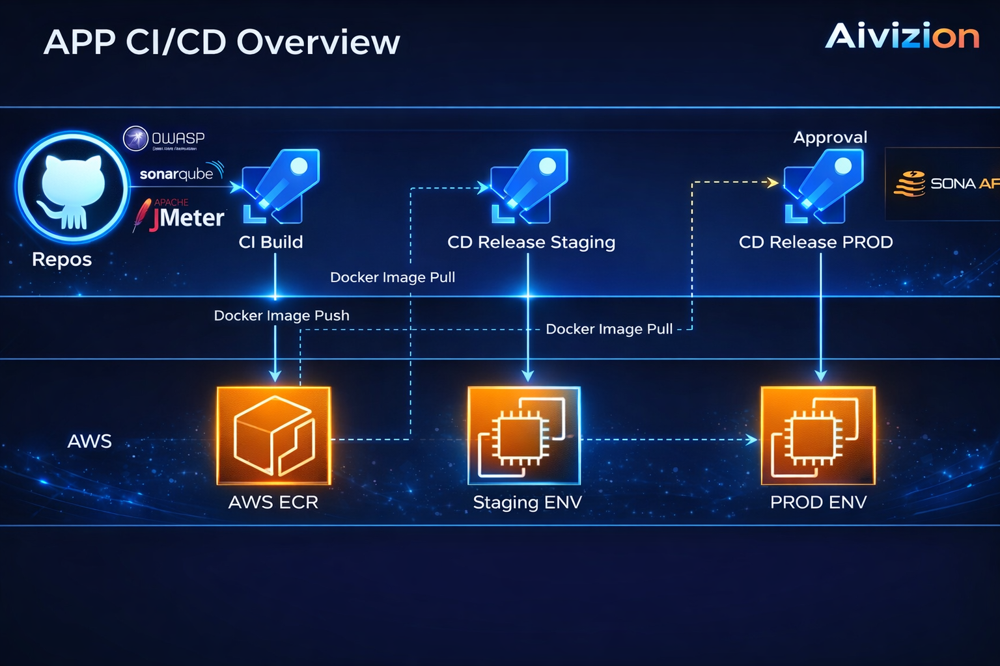

Back to Home
Cloud Infrastructure
Architecture & CI/CD overview
Overview
High-level architecture and CI/CD flow for our cloud environment.


Backup Strategy And Security Measures
Backup strategy
- Daily protection. We run daily backups of all virtual machines (VMs), and database (DB) backups every 12 hours.
- Data recovery. Regular backups support durability and enable fast recovery from unexpected incidents.
- Storage. Backup data is stored in S3 for reliable, scalable storage.
Security measures
- Restricted access. Production is isolated so only authorized personnel can work with it.
- Zero-touch deployment. Releases go through CI/CD pipelines—no manual changes on production systems.
- Secure connection. Access to production requires a VPN, so sessions stay encrypted end-to-end.
- Stack separation. The production stack is isolated from non-production stacks to limit blast radius and reduce risk.
Monitoring & Incident Management
Robust monitoring tools
- URL monitoring. Regular checks keep URLs reachable and confirm endpoints behave as expected.
- Usage metrics. We track resource consumption across CPU, memory, and disk.
- Server performance. We monitor server health, latency, and bottlenecks so issues surface early.
Incident management with SLA
- Rapid response. Incidents are handled quickly, with dedicated teams ready to step in.
- Service Level Agreement (SLA). We commit to strong service uptime; our SLAs make that expectation explicit.
- Communication. Clear channels exist for reporting incidents, and stakeholders stay informed as resolution progresses.